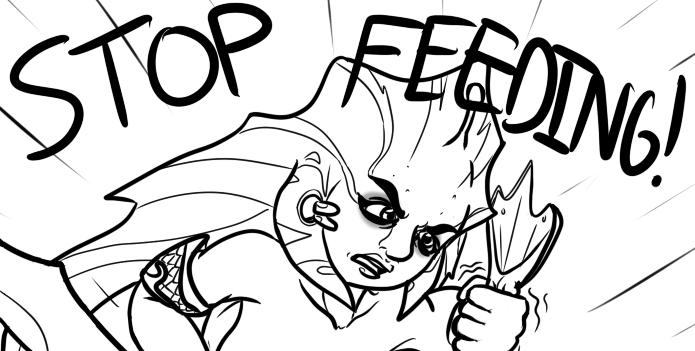

The Anti-Feeder-Script is a nice way of half-automating the appeal against feeders in DOTA2.
After you have followed the steps below, you can use /feeder feedersname on anyone feeding in your DOTA2 game(don't forget to replace "feedersname" with the actual nickname of the feeder).
If you have a better way to implement this, please Contact us so we can improve it.
Create an AutoHotKey script with the following text:
#Hotstring EndChars `t
#IfWinActive ahk_class DOTA2
::/bully::
Send : I feel your recent action(s) led to feeding. Please read http://stop-feeding.in/dota2/stop.{Left 93}
return
Alternately, download the Anti-Feeder script already compiled for you
